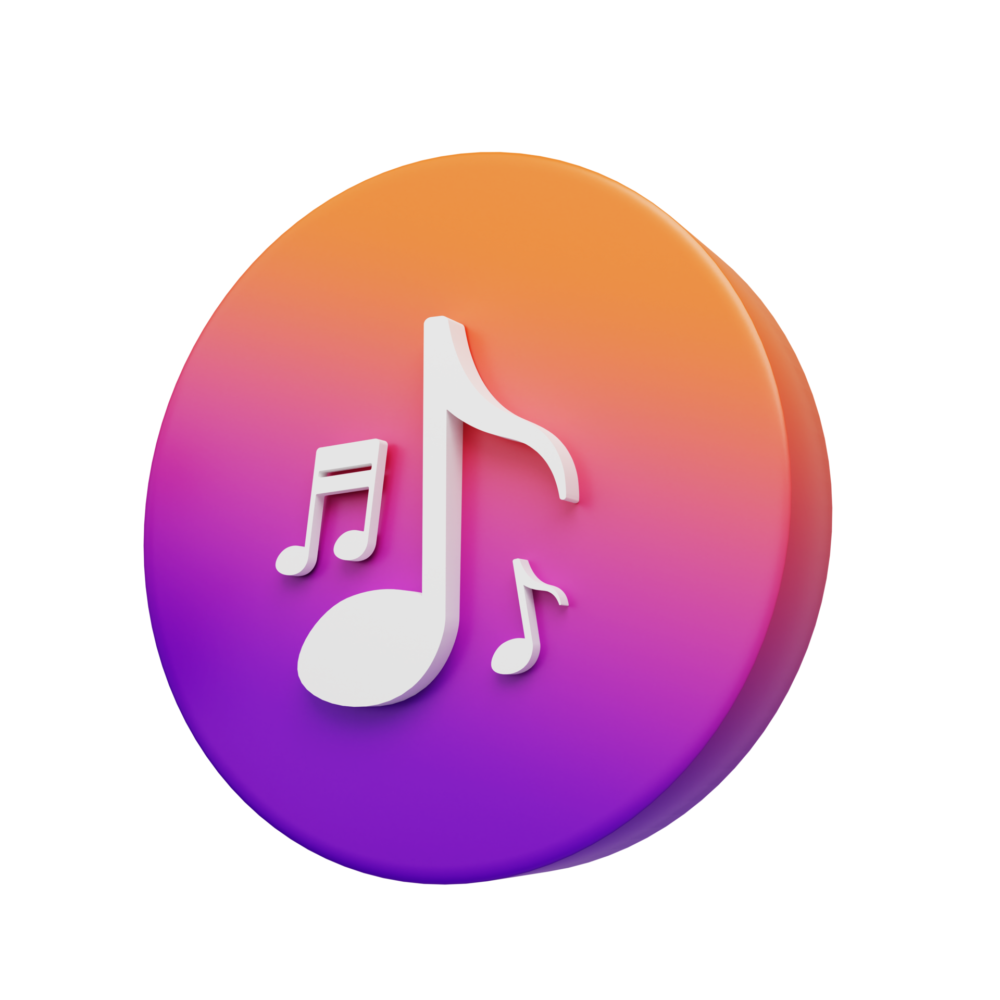
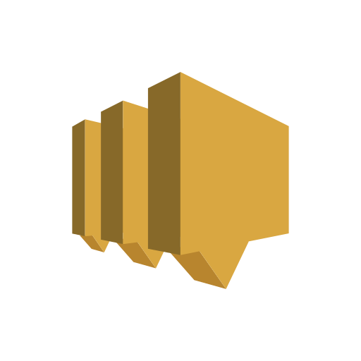

노래는 잘 못부르고 음악듣는걸 좋아합니다. 매일 헤드폰끼고 통학해요. 헤드폰 없이 지옥철 통학은 못했을 것 같아요. 주로 힙합을 듣는 것 같아요.
국내 국외 가리지 않고 다 듣습니다.
요즘 모든 곡에 다 질려버려서 좋은 노래 있으면 추천해주시면 좋을 것 같아요. 아래는 제가 좋아하는 노래들을 몇 개
가져와봤습니다.
이렇게 보니까 힙찔이 같네요.
취향이 맞으시면 한번 들어보시는걸 추천합니다! (아마 많이 안계실 것 같네요...)
게임 좋아합니다. 안가리고 이것저것 다해요. 기회가 되면 같이 하고 싶어요.
최근에 열심히 했던 게임은 발로란트입니다. 하시는 분이 계시면 좋겠네요. 열심히 했지만 실력이 빨리 오르진 않더라고요. fps 장르를 좋아하지만 많이 하는 사람들이 없는 이유가 이것 때문인 것 같아요. 학기가 시작되고 나서 계속 못해서 많이 슬픕니다. 말고도 스팀 게임들도 엄청 좋아합니다! 스토리 있는 콘솔 기반 게임들을 즐겨하는 것 같아요. 아래는 게임 추천입니다!
운동을 진짜 싫어하는데 보드같이 멋있는 스포츠는 좋아합니다. 스노우보드를 타본 적이 없어 복학하면 동아리에 들어가서 배우고 싶다는 생각을 쭉 가지고 있던 와중 멋사에서 알게 된 12기 친구가 보드 동아리를 하고 있었고 저도 바로 가입을 하게 되었습니다. 연말에 꼭 열심히 배워서 잘 타보고 싶네요.
 j_xxvlll
j_xxvlll

1학년 때 전공 수업으로 웹페이지를 만들었는데 당시에는 지금보다도 아는 것이 없었고 자바스크립트 등은 가르쳐주지도 않아서 엉망진창으로 구현했던 것이 생각이 납니다. 당시에 만든 것을 가져와서 비교하고 싶었지만 불러올 수가 없어서 아쉽네요. 그때 이후 웹페이지와 관련된 것들은 제대로 공부해본 경험이 없어서 이번 과제를 계기로 웹페이지에 관한 전반적인 강의를 찍먹해보았습니다. 여전히 잘 못하는 것 같습니다.
혼자 웹페이지를 구현해야 한다면 미리 배치와 구조, 구성 등을 짜고 시작하는 것이 좋은 것 같습니다. 피그마 같은 툴로 짜보는 것도 좋을 것 같고 그냥 노트에 작성이라도 하고 밑그림을 그리는 것이 더 짜임새 있는 웹페이지를 만들 수 있는 비결인 것 같습니다. 기획과 디자인 파트에 계신 분들이 얼마나 중요한 역할을 하는지 간접체험을 해본 것 같고 설계도 없이 만들어가는 것은 정말 힘든 것 같습니다. 또한 제가 색감이나 디자인적인 면에서 감각이 얼마나 없는지 잘 알 수 있었던 계기인 것 같습니다.^_^
이번에 웹페이지를 만들면서 css의 요소들이 얼마나 중요한지, 그전에 태그들을 짜임새있게 구성하고 id와 class를 잘 활용하여 스타일을 한번에 적용시키는 것이 코드를 깔끔하게 짤 수 있는 방법 중 하나인 것 같습니다. 아직 실력이 부족하니 그때 그때 만들어가며 스타일을 적용하곤 했지만 다음 번에 만들게 된다면 구조를 더 탄탄히 만들고 스타일을 한번에 적용해보는 방식으로 만들어봐야겠습니다.
추가적으로 자바스크립트는 제 기준에서 정말 어려운 것 같습니다. 문법이 자유로운 편이고 여러방식으로 짤 수 있다보니 같은걸 하는 것임에도 새로운걸 한다는 느낌을 많이 받았고 난해했습니다. 파이썬이 입문하기에 매우 좋은 언어라는 것을 느꼈습니다. 하지만 웹사이트에서 동적으로 작동하는 모든 것을 구현할 수 있는 점에서 매력적인 언어임이 분명하고 노드 등을 공부하기 위해서도 자바스크립트를 더 학습해볼 예정입니다. 이론적인 강의도 좋지만 바로 화면에 출력된다는 장점이 있으니 만들고 싶은 것이나 클론 코딩 등으로 학습해보는 방법도 실력을 늘리기에 좋은 것 같고 그때그때 구글링이나 지피티 등을 적절히 활용해서 모든 것을 완벽히 알고 시작하려기보단 그때그때 만들며 배우는 것이 도움이 많이 될 것 같습니다. 긴 글 읽어주셔서 감사합니다.